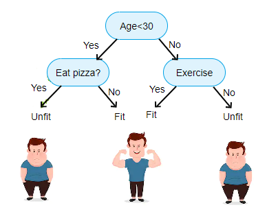
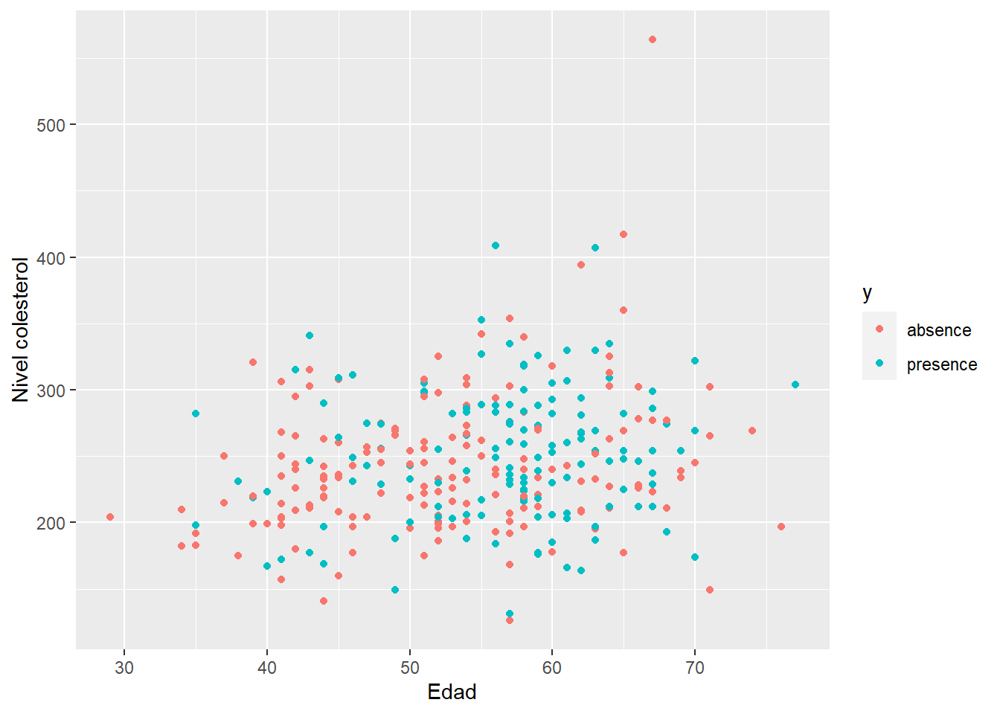
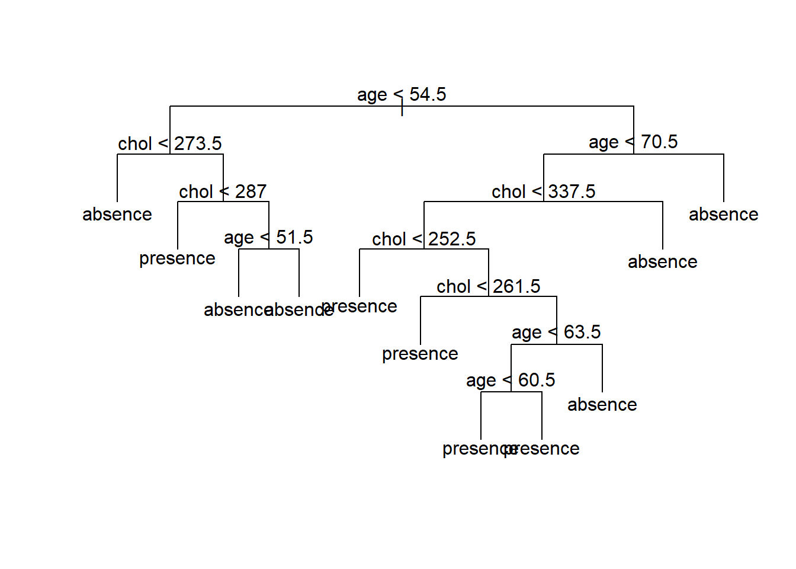

2 Árboles de clasificación
Los árboles de regresión/clasificación fueron propuestos por Leo Breiman en el libro (Breiman et al. 1984) y son árboles de decisión que tienen como objetivo predecir la variable respuesta \(Y\) en función de covariables.
Árboles
A continuación la imagen de un árbol común.

A continuación la imagen de un árbol seco e invertido.
Esta forma invertida es la forma de los árboles de regresión y clasificación.
Árbol de decisión
Conjunto de reglas sucesivas que ayudan a tomar una decisión.

Tipos de árboles
Los árboles se pueden clasificar en dos tipos que son:
- Árboles de regresión en los cuales la variable respuesta \(y\) es cuantitativa.
- Árboles de clasificación en los cuales la variable respuesta \(y\) es cualitativa.

El presente capítulo está destinado a árboles de clasificación, los árboles de regresión se explican en el capítulo 1.
Árbol de clasificación
Un árbol de regresión consiste en hacer preguntas del tipo ¿\(x_k \leq c\)? para las covariables cuantitativas o preguntas del tipo ¿\(x_k = \text{nivel}_j\)? para las covariables cualitativas, de esta forma el espacio de las covariables es divido en hiper-rectángulos y todas las observaciones que queden dentro de un hiper-rectángulo tendrán el mismo valor grupo estimado.
En la siguiente figura se ilustra el árbol en el lado izquierdo y la partición del espacio en el lado derecho. La partición del espacio se hace de manera repetitiva para encontrar las variables y los valores de corte \(c\) de tal manera que se minimice la función de costos \(\sum_{i=1}^{i=n} (y_i - \hat{y}_i)^2\).
Paquetes de R para construir árboles
Los paquetes más conocidos para construir árboles son:
Existen otros paquetes relacionados con la construcción de árboles y el lector los puede consultar en la sección Recursive Partitioning de CRAN Task View: Machine Learning & Statistical Learning.
Ejemplo con rpart

La base de datos que vamos a usar en este ejemplo está disponible en el UCI Repository. El objetivo es crear un árbol de clasificación para predecir la variable \(Y\) (target) definida como:
\[ Y=\left\{\begin{matrix} 1 \quad \text{si paciente SI sufre una enfermedad cardíaca} \\ 0 \quad \text{si paciente NO sufre una enfermedad cardíaca} \end{matrix}\right. \]
en función de las variables age y chol.
Las variables en la base de datos son las siguientes:
- Age: displays the age of the individual.
- Sex: displays the gender of the individual using the following format: 1 = male, 0 = female.
- Chest-pain type: displays the type of chest-pain experienced by the individual using the following format: 1 = typical angina, 2 = atypical angina, 3 = non — anginal pain, 4 = asymptotic.
- Resting Blood Pressure: displays the resting blood pressure value of an individual in mmHg (unit)
- Chol: displays the serum cholesterol in mg/dl (unit)
- Fasting Blood Sugar: compares the fasting blood sugar value of an individual with 120mg/dl. If fasting blood sugar > 120mg/dl then : 1 (true) else : 0 (false).
- Resting ECG : displays resting electrocardiographic results: 0 = normal 1 = having ST-T wave abnormality, 2 = left ventricular hyperthrophy.
- Max heart rate achieved: displays the max heart rate achieved by an individual.
- Exercise induced angina: 1 = yes, 0 = no.
- ST depression induced by exercise relative to rest: displays the value which is an integer or float.
- Peak exercise ST segment: 1 = upsloping, 2 = flat, 3 = downsloping.
- Number of major vessels (0–3) colored by flourosopy : displays the value as integer or float.
- Thal: displays the thalassemia: 3 = normal, 6 = fixed defect, 7 = reversible defect.
- Target: Diagnosis of heart disease. Displays whether the individual is suffering from heart disease or not: 0 = absence, 1, 2, 3, 4 = present.
La base de datos está en un repositorio en la web y se puede leer usando el siguiente código.
library(readr)
url <- 'https://raw.githubusercontent.com/fhernanb/datos/master/cleveland.csv'
datos <- read_csv(url, col_names = FALSE)Como la base de datos viene sin los nombres se deben colocar manualmente así:
colnames(datos) <- c('age', 'sex', 'cp', 'trestbps', 'chol',
'fbs', 'restecg', 'thalach', 'exang',
'oldpeak', 'slope', 'ca', 'thal', 'target')La variable respuesta es target que tiene cuatro números así: 0 = absence, 1, 2, 3, 4 = present. Por esa razón vamos a crear la nueva variable y que agregaremos a la base de datos usando el siguiente código.
Nota: en orden lexicográfico la etiqueta absence está primero que presence porque inicia con la letra a. Eso significa que el árbol va a tomar la etiqueta absence como 0 mientras que presence la va a tomar como 1.
Nota: se pudo haber creado la variable y usando ifelse(datos$target == 0, 0, 1) pero decidimos usar los nombres absence y presence en lugar del 0 y 1 para facilitar su interpretación.
¿Cuántos pacientes hay en la base de datos?
## [1] 303¿Cuántos pacientes presentan la enfermedad y cuántos no?
##
## absence presence
## 164 139Ahora vamos a crear un diagrama de dispersión de chol versus age diferenciando por y para observar si hay algún patrón claro a nuestros ojos.
library(ggplot2)
ggplot(datos, aes(x=age, y=chol, col=y)) +
geom_point() + labs(x='Edad', y='Nivel colesterol')
Para crear el árbol de clasificación usaremos la función rpart del paquete rpart. Para obtener más detalles de este paquete se recomienda consultar las viñetas del paquete disponibles en este enlace.
El código para crear el árbol es el siguiente.
Para dibujar el árbol de clasificación podemos usar la función rpart.plot del paquete rpart.plot. Para obtener más detalles de este paquete se recomienda consultar la viñeta del paquete disponible en este enlace.

Si nos cuesta trabajo entender el árbol anterior podemos generar las reglas de clasificación en un lenguaje sencillo así:
## y
## 0.26 when age < 55 & chol < 274
## 0.38 when age >= 64 & chol >= 259
## 0.38 when age < 55 & chol >= 287
## 0.45 when age >= 64 & chol < 242
## 0.65 when age is 55 to 64
## 0.86 when age < 55 & chol is 274 to 287
## 0.86 when age >= 64 & chol is 242 to 259- La primera línea de la salida anterior nos dice que “P(presence) = 0.26 para pacientes cuyo perfil es menor de 55 años y colesterol menor de 274”.
- La última línea de la salida anterior nos dice que “P(presence) = 0.86 para pacientes cuyo perfil es mayor o igual a 64 años y colesterol entre 242 y 259”.
Para construir la tabla de confusión usando los datos de entrenamiento podemos usar el siguiente código.
## Clasificacion
## Verdadero absence presence
## absence 124 40
## presence 56 83Para obtener la tasa de clasificación correcta podemos usar el siguiente código.
## [1] 0.6831683Supongamos que nos llegaron 3 pacientes, el primero un hombre de 45 años con nivel de colesterol 300, el segundo una mujer de 60 años con nivel de colesterol de 450 y el tercero otro hombre de 65 años con nivel de colesterol de 200. ¿A qué grupo se debe asignar cada paciente?
nuevo_df <- data.frame(age=c(45, 60, 65),
chol=c(300, 450, 200))
predict(mod1, newdata=nuevo_df, type='prob')## absence presence
## 1 0.6190476 0.3809524
## 2 0.3486239 0.6513761
## 3 0.5500000 0.4500000Si queremos obtener las etiquetas de clasificación podemos usar:
## 1 2 3
## absence presence absence
## Levels: absence presenceSupongamos que nos llegan 3 nuevos pacientes: el primero un hombre de 45 años pero no sabemos su nivel de colesterol, el segundo una mujer de edad desconocida y con nivel de colesterol de 450 y el tercero otro hombre del cual no sabemos ni su edad ni su nivel de colesterol. ¿A qué grupo se debe asignar cada paciente?
nuevo_df <- data.frame(age=c(45, NA, NA),
chol=c(NA, 450, NA))
predict(mod1, newdata=nuevo_df, type='prob')## absence presence
## 1 0.7391304 0.2608696
## 2 0.6250000 0.3750000
## 3 0.3486239 0.6513761## 1 2 3
## absence absence presence
## Levels: absence presenceEjemplo con tree
Vamos a construir un árbol de clasificación para los mismos datos del ejemplo anterior pero usando la función tree del paquete tree.
Para dibujar el árbol.

Supongamos que nos llegaron 3 pacientes, el primero un hombre de 45 años con nivel de colesterol 300, el segundo una mujer de 60 años con nivel de colesterol de 450 y el tercero otro hombre de 65 años con nivel de colesterol de 200. ¿A qué grupo se debe asignar cada paciente?
nuevo_df <- data.frame(age=c(45, 60, 65),
chol=c(300, 450, 200))
predict(mod2, newdata=nuevo_df, type='vector')## absence presence
## 1 0.5000000 0.5000000
## 2 0.7000000 0.3000000
## 3 0.4567901 0.5432099## [1] presence absence presence
## Levels: absence presenceEjemplo
Comparemos los resultados obtenidos con las funciones rpart y tree.
y_rpart <- predict(mod1, type='class')
y_tree <- predict(mod2, type='class')
table(datos$y, y_rpart)## y_rpart
## absence presence
## absence 124 40
## presence 56 83## y_tree
## absence presence
## absence 115 49
## presence 45 94References
Breiman, L., J. H. Friedman, R. A. Olshen, and C. J. Stone. 1984. Classification and Regression Trees. 1nd ed. Boca Raton, Florida: Chapman; Hall/CRC. https://www.crcpress.com/Classification-and-Regression-Trees/Breiman-Friedman-Stone-Olshen/p/book/9780412048418.